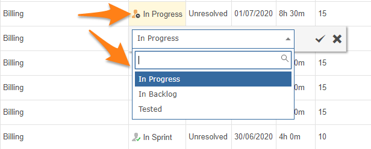
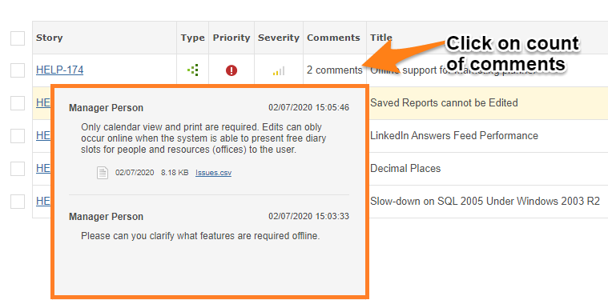
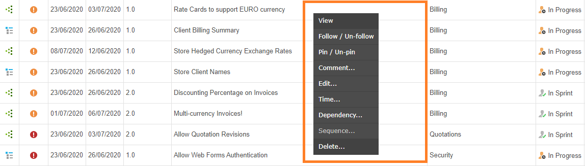

Items on the grid can be edited, deleted, updated and commented upon. For more extensive actions, such as creating dependencies, moving items between projects etc. click on the Item Key hyperlink to go to the View Item page.
When viewing items on the grid you can click on any field to edit its values if you have edit permission for that field on the Project Template. If you have selected multiple items using the item selector checkbox on the left, all selected items will have the value you set.

You can view all comments on any item. Ensure the Comments column is selected, and click on the comment count.

Right-click on any item to access the context menu.

If you click on the item key, you will open the item in the highly functional View Item page.
Subscribe for email notifications when the item changes.
Add or remove the item from the list of pinned items (top right of the screen).
Add a comment to the item.
Displays pop-up editor so you can change item fields.
Displays pop-up editor so you can enter time against an item.
Displays pop-out editor so you can create a new item that will be a child of the item you are on.
If you are using the Grid's Sequence Zone and you have the permissions, this will move the item into the bottom of the Sequence Zone.
Permanently delete the item.